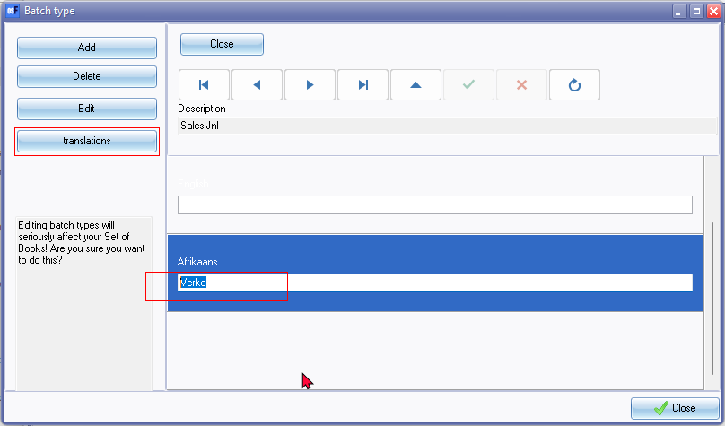
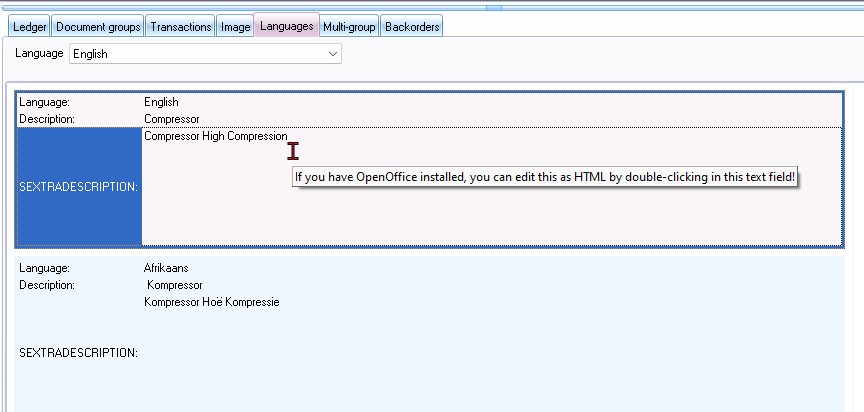
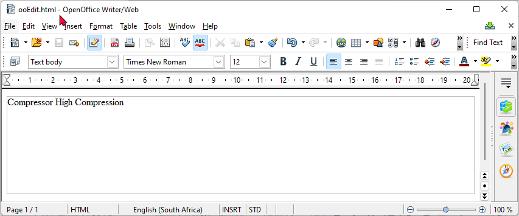

Known issues - Plugin - Multi-language accounts
Known issues - Multi-language accounts
|
|
Multi-language Set of Books plugin - Manual - Shop - Licence : Once-off - Documentation : Help documentation Online Help documentation : Multi-language accounts Translation : Not checked at this stage |

See - Multi-Language accounts
Multi-language accounts - Translate batch types
Setup → Batch type - Languages - translations - Labels invisible need to focus before language is available - Batch name not visible if Text is selected, the Batch name is visible.
Languages Multi language - has also a display issue also in D10 Build 453 of Setup batch types where the text is sometimes unreadable - need to select the text to see the text
White text in White Background
Also in Classic theme - Translations
osFinancials5.1.0.4 Also replicated in osFinancials5.1.100 - since osFinancials5 (453)
Other screens is OK

Multi-language accounts - Translate Stock item descriptions -Languages - OpenOffice
See Translate Stock descriptions - Languages tab on Stock items.

osFinancials 5.1.0.100 - DOES NOT LAUNCH - ooEdit.html - OpenOffice Writer/Web (Replicated not launching ooEdit.html - OpenOffice Writer/Web in all versions of osFinancials5.1.0.XXX and in osFinancials5 (Build 453)
osFinancials 4.0.0.1093 - Launches ooEdit.html - OpenOffice Writer/Web (Still working correct in osFinancials4) This probably indicates that the installation of OpenOffice and Windows 11 updates is correct.
Tested in osFinancials4.10.0.1093 in The installed version is OpenOffice 4.1.12. and new updated install of OpenOffice 4.1.14.
|
|
If you have OpenOffice installed on your system, you may double-click in the Description field of any language, to launch OpenOffice Writer/Web.  Write your text and use OpenOffice to format your text, etc., if necessary. A message will be displayed: "Press ok if you are done with the document to continue! Once finished, click the OK button to transfer your text to the "Description" field. |